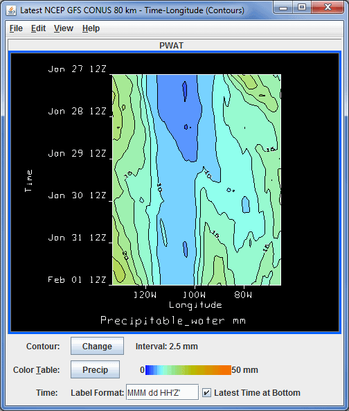

Overview
The Hovmoller display plots grid, gridded point, and satellite imagery data in a diagram with the Latitude/Longitude component on the X-axis, and the time component on the Y-axis. This display option is found in the Displays menu of the Field Selector tab of the Data Explorer. The data can be displayed as Time with respect to either Latitude or Longitude, and either as a Color Shaded or Contour display type.

Image 1: Hovmoller Display
Properties
- Contour - Opens the Contour Properties Editor, which allows for changing the contour interval, style, and labeling of the contour lines. The current contour interval for the display is listed next to Interval. This is an option for Contour displays.
- Color Table - Shows the active color table and the associated high and low data values in the units of the display. As the mouse pointer is moved over the color bar, the value at a particular color is shown. Right click on the color bar or click on the button that displays the name of the Color Table to make modifications to the color bar. This allows for opening the Color Table Editor, changing the range, selecting other color tables, etc.
- Time - Sets the format used to label time along the Y-axis. See the Formats and Data Preferences page for information on how to format the label. After the desired values are entered into this field, press Enter for it to be applied to the display.
- Latest Time at Bottom - Displays the oldest time will be shown at the top of display, and the most recent time at the bottom when selected. This is the default for the Hovmoller display. If this box is unchecked, the Y-axis will be inverted, showing the most recent time at the top, and the oldest time at the bottom.
By default, if a Longitude display is selected, the entire spatial domain will be utilized, and the longitude range will go from the western extent to the eastern extent of the domain. The latitude will be averaged from the northern to southern boundaries of the domain. The user can restrict the latitude and longitude domain by selecting a region in the Region tab of the Field Selector tab of the Data Explorer. The Latitude displays work the same way, by averaging the longitude across the entire domain unless a region was subsetted.
Menus
Many of the menu items seen utilizing this display are standard options that can be found in the Menus section of the Layer Controls page. However, there are a couple of options unique to this display.
The Edit menu has this unique option:
- Contour Line Color - Allows for changing the contour line color in the display. This option is an option for the Contour display types.
The View menu has this unique option:
- Hovmoller View - Allows for capturing an image of the data and change many aesthetic aspects of the display.